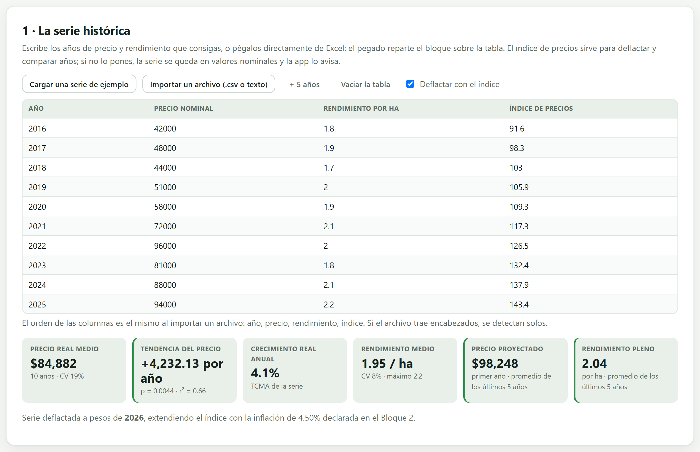
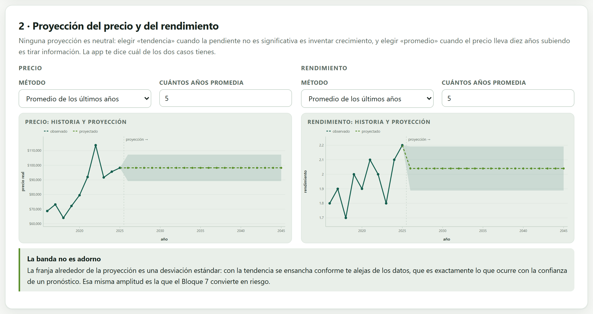
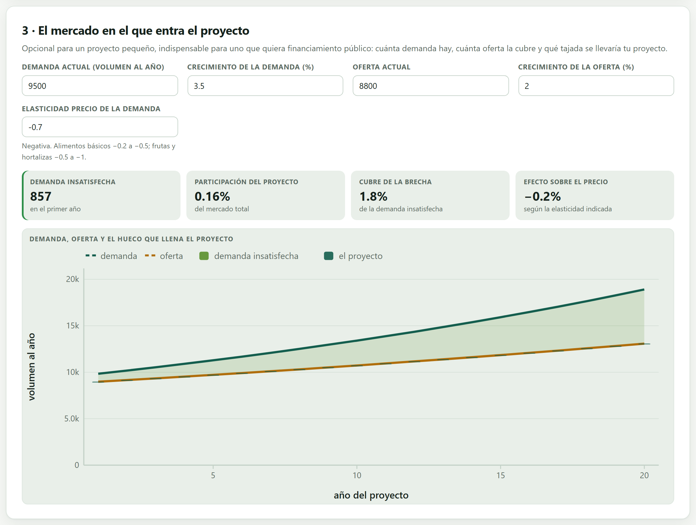
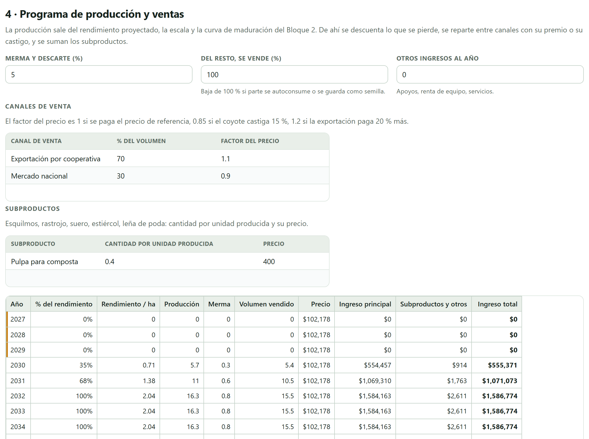
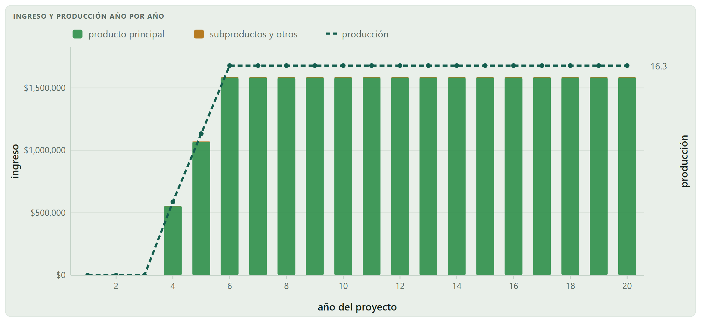

De aquí sale la primera línea del estado de resultados, y con ella la mitad del VAN. El bloque toma la serie de precios y rendimientos que consigas, la deflacta, la describe, la proyecta con el método que elijas y la convierte en un programa de ventas año por año que reconoce la gestación, la merma y los canales.
El ingreso de un proyecto agrícola es un producto de tres números —precio × rendimiento × escala— y los tres son inciertos. Este bloque no los adivina: toma lo que ha pasado, lo pone en pesos comparables, dice qué tan confiable es esa historia y te deja elegir, con conocimiento de causa, qué vas a suponer hacia adelante.
El resultado es una sola tabla —el programa de producción y ventas— con un renglón por año del horizonte. Esa tabla es lo único que los bloques siguientes leen de aquí: el Bloque 4 la usa para calcular los costos que siguen a la producción, el 5 para levantar el estado de resultados y el 8 para saber cuánto se exporta.
Suponer un precio optimista no se siente como una mentira: se siente como confianza. Pero un 10 % de más en el precio es, casi siempre, el doble o el triple de eso en el VAN, porque el costo no se mueve. Por eso este capítulo insiste tanto en dejar registrado de dónde salió cada número: la serie, el método de proyección y el año base van a acabar impresos en el informe del Bloque 10.
La primera tarjeta es una mini-hoja de cuatro columnas: año, precio nominal, rendimiento e índice de precios. Se puede escribir a mano, pegar un bloque copiado de una hoja de cálculo —el pegado se reparte solo sobre las celdas— o importar un .csv.

Un precio de 2016 y uno de 2025 no son comparables: entre ellos hay casi 57 % de inflación acumulada. Mirar la serie nominal lleva a ver crecimiento donde solo hubo inflación. Deflactar es llevar todos los años a pesos del mismo año con el índice de precios:
La app deflacta al año base del Bloque 2, no al último año de la serie. Si el año base es posterior al último dato —lo normal: la serie termina en 2025 y el proyecto arranca en 2026—, extiende el índice hacia adelante con la inflación declarada y lo dice en la nota al pie de la tarjeta.
El precio del cafetal pasa de $42,000 en 2016 a $94,000 en 2025: más del doble en nominal, un crecimiento aparente del 9.4 % anual. Deflactado a pesos de 2026 con el índice —de 91.6 a 143.4, extendido a 2026 con el 4.50 %— el crecimiento real es de 4.1 % al año. Sigue siendo un producto que se encareció, pero menos de la mitad de lo que parecía.
| Años | Qué se puede hacer con ella |
|---|---|
| Menos de 2 | Nada: la app marca error. No hay serie que describir ni tendencia que probar. |
| 2 a 4 | Se puede promediar, pero la app advierte: una tendencia estimada con tan pocos datos es frágil, y conviene quedarse con el promedio o con el último valor. |
| 5 a 7 | Suficiente para un promedio defendible; la tendencia solo si la prueba sale significativa. |
| 8 o más | Lo deseable. Permite ver ciclos, distinguir tendencia de ruido y justificar el método elegido. |
El botón Cargar una serie de ejemplo trae diez años de aguacate, maíz de temporal, jitomate de invernadero, bovino en pie, queso artesanal y el rendimiento adicional de un riego. Tienen el orden de magnitud y la variabilidad reales, pero no son cifras oficiales: para un estudio de verdad, las series se toman del servicio de información agroalimentaria, del sistema de precios de mercados mayoristas o del registro del propio productor.
Debajo de la mini-hoja aparecen seis recuadros. No son decoración: son el argumento con el que se justifica el método de proyección de la tarjeta siguiente.
| Recuadro | Qué dice | En el café |
|---|---|---|
| Precio real medio | El promedio de la serie deflactada y su coeficiente de variación. Arriba de 25 % la app advierte que el riesgo pesará más que la media. | $84,882 · CV 19 % |
| Tendencia del precio | La pendiente de la recta de mínimos cuadrados, en pesos por año, con el valor p de su prueba t y el r². Es la que decide si «tendencia» es un método legítimo. | +$4,232.13 al año p = 0.0044 · r² = 0.66 |
| Crecimiento real anual | La tasa de crecimiento media anual entre el primer y el último dato. Sirve para el método de crecimiento compuesto. | 4.1 % |
| Rendimiento medio | Lo mismo para el rendimiento, con su máximo observado. La app compara ese máximo con el rendimiento pleno que supongas. | 1.95 t/ha · CV 8 % máximo 2.2 |
| Precio proyectado | Lo que el método elegido da para el primer año, y con qué método se obtuvo. | $98,248 |
| Rendimiento pleno | El rendimiento al que llega el proyecto cuando madura. | 2.04 t/ha |
La app ajusta una recta al precio real contra el año y prueba si su pendiente es distinta de cero. El valor p es la probabilidad de ver una pendiente así de grande si en realidad el precio no tuviera tendencia. Con p = 0.0044, como en el café, esa probabilidad es de 4 en mil: la tendencia es real. Con p = 0.30 no lo es, y proyectar «tendencia» sería inventar un crecimiento que los datos no sostienen. El r² dice otra cosa distinta: cuánta de la variación explica la recta —0.66 en el café, es decir que un tercio de lo que pasó sigue siendo ruido.
Ninguna proyección es neutral. Elegir «tendencia» cuando la pendiente no es significativa es inventar crecimiento; elegir «promedio» cuando el precio lleva diez años subiendo es tirar información. La tarjeta 2 te deja elegir, por separado para el precio y para el rendimiento, y la tarjeta 1 ya te dijo cuál de los dos casos tienes.

| Método | Qué hace | Cuándo es el correcto |
|---|---|---|
| Promedio de los últimos años | Promedia los últimos k años y repite ese valor todo el horizonte. La banda es su desviación estándar. | Cuando no hay tendencia significativa, que es el caso más común en precios agrícolas. |
| Tendencia de mínimos cuadrados | Extiende la recta ajustada. La banda se ensancha al alejarse del centro de los datos, como manda el intervalo de predicción. | Solo si la prueba de la tarjeta 1 salió significativa, y aun así con cuidado a veinte años. |
| Crecimiento compuesto | Aplica una tasa constante año con año, la de la serie o la que escribas. | Cuando hay una razón estructural para esperar crecimiento: un mercado que se abre, una demanda que crece. |
| Último valor observado | Repite el último dato. | Series muy cortas, o cuando el último año refleja un cambio de nivel permanente. |
| Valor que yo indico | El número lo pones tú. | Cuando hay un contrato, un precio de garantía o un precio meta que gobierna el proyecto. Se justifica con el documento, no con la serie. |
| Si la tendencia salió significativa y la serie es larga | entonces tendencia, y reporta la pendiente y su valor p en el estudio. |
| Si la tendencia no es significativa | entonces promedio de los últimos años: es la opción honesta, y la app te avisa si eliges otra. |
| Si el precio lo fija un contrato o un programa | entonces valor indicado, citando el documento que lo fija. |
| Si dudas entre dos | entonces elige el conservador y deja el otro para el análisis de sensibilidad del Bloque 7. |
A precios constantes, hacer crecer el precio real significa suponer que el producto se encarecerá frente a todo lo demás durante veinte años. La app lo advierte, porque es un supuesto fuerte que casi nunca se justifica.
La tercera tarjeta responde una pregunta que todo jurado hace: ¿y a quién le vas a vender? Con cuatro números —demanda actual, oferta actual y el crecimiento de cada una— la app dibuja la brecha entre las dos y calcula qué parte de ella cubre el proyecto.

| Indicador | Cómo se lee | En el café |
|---|---|---|
| Demanda insatisfecha | Demanda menos oferta en el primer año. Si sale negativa, el mercado ya está cubierto y el proyecto tendría que desplazar a alguien. | 857 t |
| Participación del proyecto | Volumen del proyecto entre demanda total. Arriba del 5 % la app advierte que el precio deja de ser un dato dado. | 0.16 % |
| Cubre de la brecha | Qué parte de la demanda insatisfecha absorbe el proyecto. Es el argumento de mercado más directo. | 1.8 % |
| Efecto sobre el precio | Con la elasticidad precio de la demanda, cuánto movería el precio la producción del proyecto. | −0.2 % |
Un proyecto pequeño es tomador de precios: vende lo que quiera al precio del mercado, porque su volumen no lo mueve. Uno grande no. Con una elasticidad de −0.5, un proyecto que agrega 10 % al volumen del mercado tira el precio 20 %, y ese golpe se lo aplica también a sí mismo. La app calcula ese efecto y lo reporta; si tu participación es pequeña —como el 0.16 % del cafetal— el efecto es despreciable y el precio se puede tratar como dado.
La última tarjeta arma la tabla que los bloques siguientes leen. Parte del rendimiento pleno y del precio proyectado, y les aplica, en este orden, la maduración, la merma, los canales y los subproductos.


| Rendimiento pleno × escala | 2.04 t/ha × 8 ha = 16.32 t |
| Menos 5 % de merma | = 15.504 t vendibles |
| Precio proyectado | $98,247.80 / t |
| × factor de canales (0.7 × 1.1 + 0.3 × 0.9) | = $102,177.71 / t |
| Ingreso del producto principal | 15.504 × 102,177.71 = $1,584,163 |
| Subproducto (16.32 × 0.4 × $400) | = $2,611 |
| Ingreso total del año | $1,586,774 |
Multiplicado por los quince años plenos y sumados los dos de maduración, el horizonte entero deja $25,428,060 de ingreso —la cifra que el Bloque 5 empieza a repartir entre costos, impuestos y crédito.
La tarjeta de revisión reúne lo que la app encontró raro. Vale la pena leerlos todos: casi todos señalan una decisión que habrá que justificar por escrito.
| Clase | Lo que revisa |
|---|---|
| Error | Menos de dos años de precios; un programa de ventas que no genera ingreso —revisa rendimiento, precio y escala—. |
| Advertencia | Serie demasiado corta para estimar una tendencia; pendiente no significativa con el método de tendencia elegido; precio real muy variable (CV alto); años sin índice que se quedaron en nominal; un precio real que crece a precios constantes; participación de mercado tan grande que el precio deja de ser un dato; oferta que ya cubre la demanda; rendimiento pleno por encima del máximo observado; merma desproporcionada; canales que no suman 100 %. |
«El rendimiento pleno queda por encima del máximo que se ha observado.» Suponer que la parcela del proyecto va a superar el mejor año de la serie es posible —tecnología nueva, material mejorado— pero hay que decir por qué. Si no se explica, es el primer número que un jurado va a bajar, y con él se cae el VAN.
| Si la serie tiene menos de cinco años | entonces usa promedio o último valor, y dilo en el estudio; no proyectes tendencias. |
| Si el CV del precio pasa de 25 % | entonces planea desde ahora el Bloque 7: el riesgo va a pesar más que la media. |
| Si el proyecto toma más del 5 % del mercado | entonces baja el precio por el efecto de la elasticidad, o justifica por qué no aplica. |
| Si el programa ya cuadra | entonces descárgalo en .csv: es el anexo de mercado del estudio. |
El Bloque 4 va a leer la producción de esta tabla para calcular los costos que siguen al volumen: si vuelves aquí y cambias el rendimiento, los costos se recalculan solos.